Cybersecurity Attack Defense Strategies
Security Posture
Current threat landscape
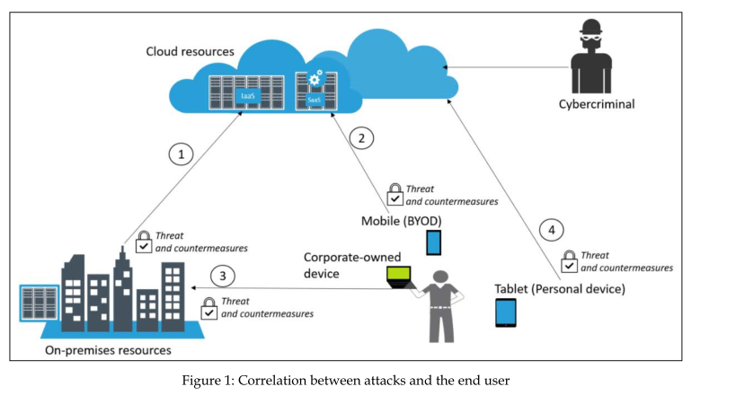
Enhancing security posture
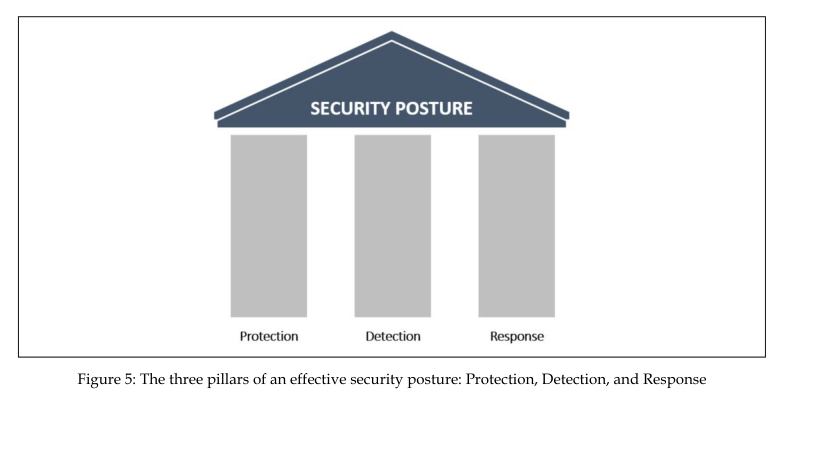
Cloud Security Posture Management
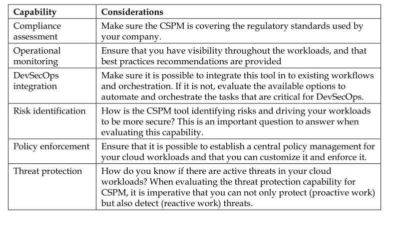
Red and Blue team
Assume breach
“Fundamentally, if somebody wants to get in, they’re getting in. Alright, good.Accept that.”
Incident Response Process
The incident response process
- Use whatever industry standards,recommendations,best practices help you to create your own incident response.
Regardless of the one you select to use as a reference, make sure to adapt it to your own business requirements.Most of the time in security the concept of “one size fits all “doesn’t apply; the intent is always to leverage well-known standards and best practices and apply them to your own context. It is important to retain the flexibility to accommodate your business needs in order to provide a better experience when operationalizing it. 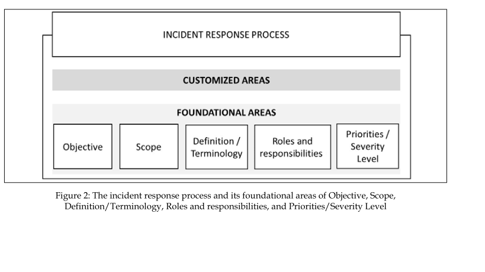
To determine the priority and severity level,you will need to also take into consideration the following aspects of the business: · Functional impact of the incident on the business:The importance of the affected system for the business will have a direct effect on the incident’s priority.All stakeholders for the affected system should be aware of the issue,and will have their input in the determination of priorities. · Type of information affected by the incident:Every time you deal with personal identifiable information(PII),your incident will have high priority;therefore,this is one of the first elements to verify during an incident. · Recoverability:After the initial assessment,it is possible to give an estimate of how long it will take to recover from an incident.Depending on the amount of time to recover,combined with the criticality of the system,this could drive the priority of the incident to high severity. In addition to these fundamental areas,an incident response process also needs to define how it will interact with third parties,partners,and customers. 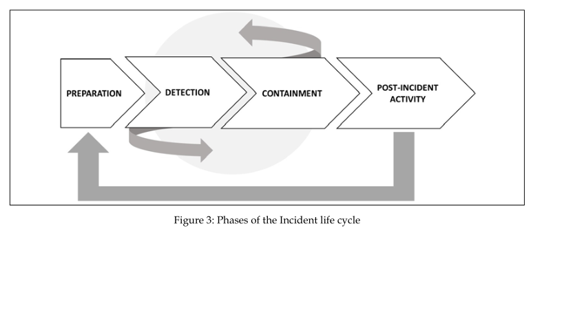
What’s a Cyber Strategy
Why do we need to build cyber strategy
The following are some of the reasons why cyber strategies are essential:
- A move from assumptions:Some of the cybersecurity defense mechanisms used in organizations today are based on assumptions from the IT department or cybersecurity consultants.However,there is always a chance that assumptions could be misleading and perhaps tailored only towards a certain goal such as compliance.Cyber strategies,on the other hand,are informed plans of action that cover different cyber threats and risks.They are also developed with a common end goal in sight.
- Better organization:Cyber strategies bring centralized control and decision making to matters regarding cybersecurity since they are built in collaboration with different stakeholders.This ensures that different departments in an organization can coordinately set and work towards achieving a common set of security goals.For instance,line managers could discourage junior employees from sharing login credentials to prevent phishing.Such small contributions from different departments,as informed by the cyber strategy,help improve the overall security posture of an organization.
- Details on security tactics: Cyber strategies lay out high-level tactics of ensuring the security of the organization. These tactics touch on incidence response, disaster recovery and business continuity plans, and behavioral responses to attacks to help calm stakeholders, among other tactics. These can help to inform stakeholders about the preparedness of an organization to dealing with cyber attacks.
- Long-term commitment to security:A cyber strategy provides assurance that the organization will commit considerable efforts and resources toward securing the organization.Such commitment is a good sign to stakeholders that the organization will remain secure during attacks.
- Long-term commitment to security:A cyber strategy provides assurance that the organization will commit considerable efforts and resources toward securing the organization.Such commitment is a good sign to stakeholders that the organization will remain secure during attacks.
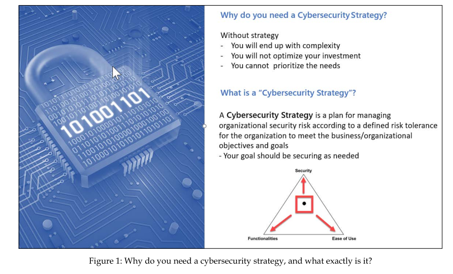
How to build a cyber strategy
- Understand the business
The more you know about your business, the better you can secure it. It’s really important to know the Goals of your organization, Objectives, the People you work with, the Industry, the current Trends, your Business risks, how to Risk appetite and tolerance the risks, as well your Most valuable assets. Everything we do must be a reflection of the business requirements that are approved by the senior leadership.
- Understand threat and risk 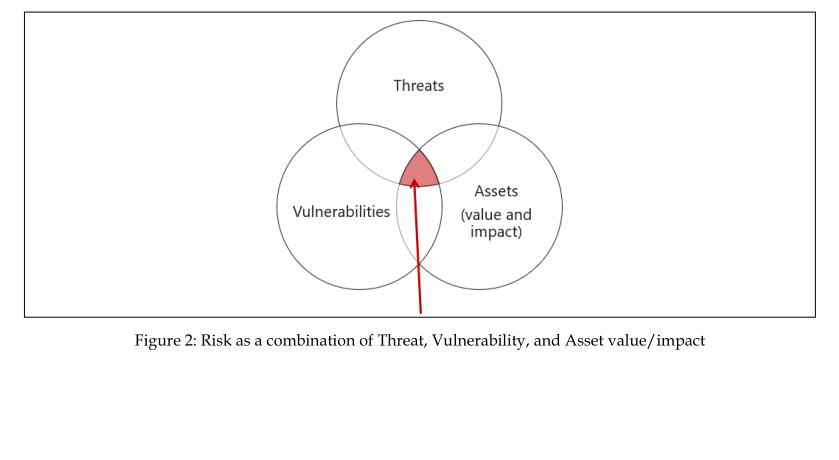
- document 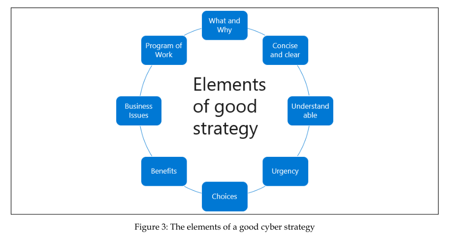
Best cyber attack strategy(Red Team)
- External test strategy attemp to breach
- Internal test strategy mimicking other insider threats that may try to compromise the organization.
- Blind testing strategy This is a testing strategy aimed at catching the organization by surprise. It conducted without prior warning to the IT department
- Targeted testing strategy This type of testing isolates only one target and carries out multiple attacks on it to discover the ones that can succeed.
Best cyber defense strategy(Blue Team)
- defense in the depth
- Network security
- An endpoint antivirus system
- Encryption
- Access control 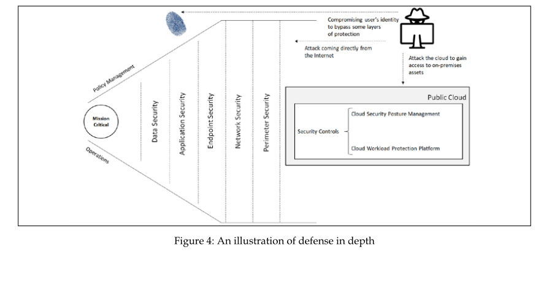
- defense in the breadth
- WAF
- using OWASP methodologies to develop applications
- Security automation machine learing,AI-based firewalls and host-based antivirus
Understanding the cybersecurity kill chain
Introducing the cyber kill chain
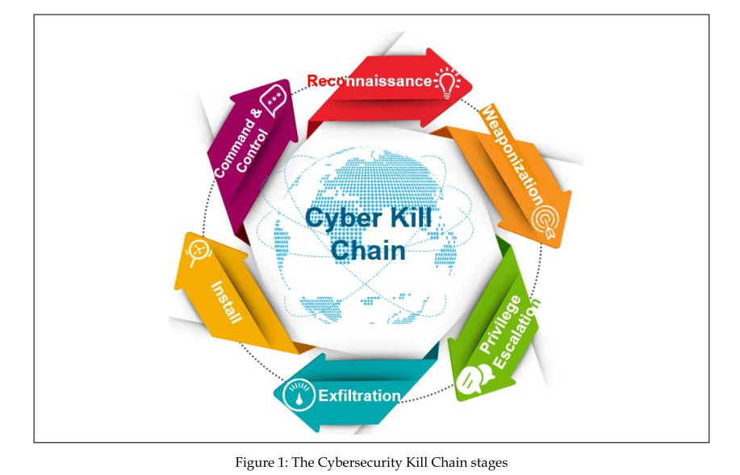 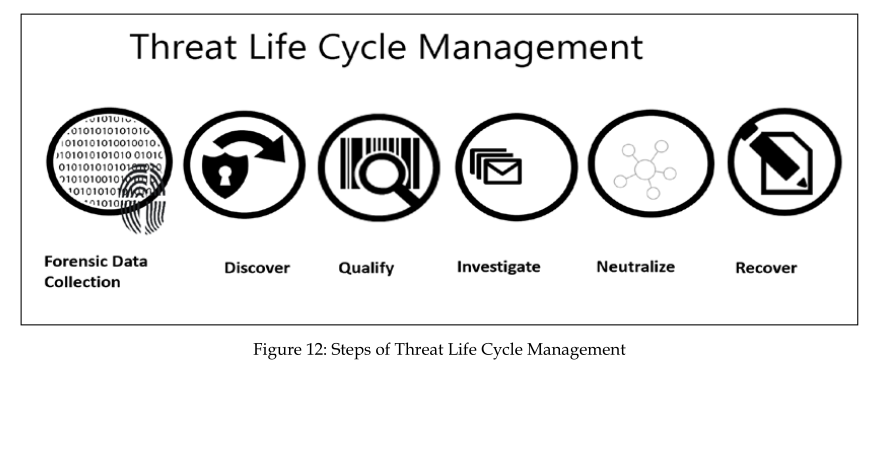
- Data clollection
- Discover
- search analytics
- machine analytics
- Qualify false positive are a big challenge
- investigate
- Neutralize
- Recover
Airgeddon in kali
Reconnaissance
External reconnaissance
- webshag
- phoneinfoga
- Theharvester
- Penetration testing kit on chrome
- Netcraft
- Dumpster diving
- social media
- Social engineering
- pretexting
- diversion theft
- phishing
- keepnet lab
- phone fishing(vishing)
- spear phishing
- water holing
- quid pro quo
- tailgating
Internal reconnaissance
- Airgraph-ng
- Sniff and scan
- Prismdump
- Tcpdump
- Nmap
- Wireshark
- Scanrand
- Masscan
- Cain and Abel
- Nessus
- Metasploit
- Aircrack-ng
- Wardriving
- Hak5 Plunder bug
- Catt
- Canary token links
Compromising the system
Cloud hacking tools
- Nimbusland
- LolrusLove
- Prowler2.1
- fLAWS
- OWASP_DevSlop_Project
- hackers can use tools such as Shellter to verify their phishing resources
- Ophcrack to recover windows password
- SQL Injection Scanner online
- SQLi Scanner
Mobile Phone attack
- SensorID
- SpearPhone
Red and Blue team Tools for Mobile Phone
- SnoopDroid
- AndroGuard
- Frida
- Cycript
- iOS implant Teardown
Building a Red team pc in windows
- commando-vm
Learning Hack web
- bWAPP
- HackThis
- OWASP Juice Shop Project
- Try2Hack
- Google Gruyere
- Damn Vulnerable Web Application(DVWA)
Lateral Movement
PtH Mitigation Recommendations
- Learn to administrate with least privilege
- Have a dedicated limited-use workstation for Admin duties and don’t use your day-to-day workstation to connect to the internet as well as Data Centers.We highly recommend using PAWs,which are Privileged Access Workstations,for your sensitive staff and separated from your daily duties. This way you will have much stronger protection against phishing attacks, application and OS vulnerabilities,various impersonation attacks,and of course PtH.
- Provide administrators with accounts to perform administrative duties that are separate from their normal user accounts
- Monitor the privileged accounts usage for abnormal behavior
- Restrict domain administrator accounts and other privileged accounts from authenticating to lower trust servers and workstations
- Do not configure services or scheduled tasks to use privileged domain accounts on lower trust systems,such as user workstations
- Add all your existing and new high privileged accounts in to a “Protected Users"group,and ensure additional hardening will apply to those accounts·Use of the Deny RDP and Interactive Logon policy settings to enforce this for all privilege accounts and disable the RDP access to local administrator accounts
- Apply the Restricted Admin mode for Remote Desktop connections
- Use multi-factor authentication or Smartcards for Privileged accounts·Stop thinking in lists,start thinking in graphs
- Keep in mind that PtH is not just a Microsoft Problem;Unix and Linux systems can suffer from the same issue
Privilege Escalation
Dumping the SAM file
command-line tool HoboCopy reg save hklm\sam c:\temp\sam reg save hklm\system c:\temp\system reg save hklm\security c:\temp\security
Crack NTLM or LM
- The Cain and Abel
Windows Boot Sequence
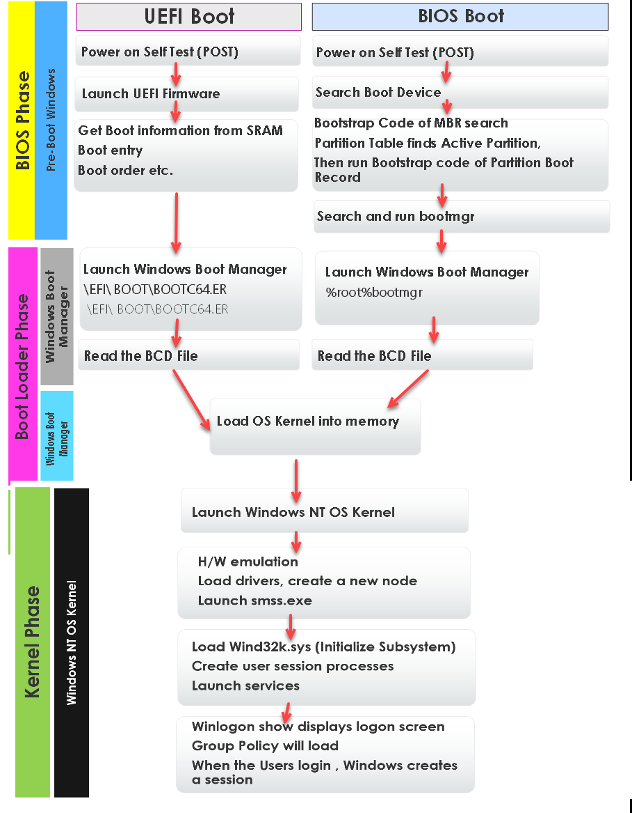
Security Policy
Educating the end user
- Social media security guideline for user
- Security Awareness training
- Real-world example
- Practice(contains a self-assessment)
Policy enforcement
Policy,Standard,Guideline,Procedure Microsoft Security Compliance Toolkit
- Application whitelisting
- windows secpol.msc (AppLocker)
- Mac GateKeeper
- Linux SElinux
- Machine Learning to gen a list of apps
- Hardening Security Guide on all kinds of os platform For Windows:Enhanced Mitigation Experience Toolkit(EMET)
Monitoring for compliance
- Microsoft Operations Management Suite(OMS)
Continuously driving security posture
Network Segmentation
The defense in depth approach
Physical network segmentation
Active Sensors
Detection capabilities
IDS
IPS
- Rule-based detection
- Anomaly-based detection
Behavior analytics on-premises
- user and entity behavior analytics(UEBA) OpenUBA Microsoft ATA
Behavior analytics in a hybrid cloud
- Azure Security Center
- Splunk and LogRhythm
Threat Intelligence
OpenSource tool for TI
OPSWAT FraudGuard Critical Stack Intel Feed Palo Alto MineMeld OpenSource TI Malicious or Not AlienVault Unified Security Management OTX Pulse Virtus Total Talos Intelligence Cisco The Harvester
Microsoft threat intelligence
- Azure Sentinel
Investigating an incident
Scoping the issue
- Key artifacts
- Timezone
- msinfo32.exe
- security events use auditpol /get /category:* to view auditor config
·4624 and 4634-logon and logoff:These event log entries show the use of credentials on a potentially compromised system.In addition,the 4624 event IDs can show whether the logon was performed on the local system or through a remote connection,which is critical to finding lateral movement using the Windows SMB protocol. ·4625-account failed logon:One or two of these entries may not mean much.A few entries of this nature may indicate a fat-fingered logon here and there,but an excessive amount of these log entries is indicative of an adversary attempting to brute-force credentials. ·4672-special privileges assigned to new logon:This is the Windows OS equivalent of a user account attempting to elevate to root-or administrator-level privileges.This can be used to determine if an adversary is escalating privileges with a compromised account. ·4688-a new process has been created:This log entry documents every time a program is run.While there may be a lot to sift through in the logs,in terms of how many executables are run,threat hunters can focus on well-known abused programs,such as PsExec,CMD.EXE,or Whami.exe,to zero in on potentially malicious behavior. ·4768-4773-Kerberos service:There are several well-known exploits used by adversaries where the Kerberos Ticket Granting Ticket is utilized for elevated privileges.This attack-often referred to as Kerberoasting-is particularly devastating,as it allows attackers to run through the network with valid credentials. 5140-a network share object was accessed: This activity is logged when a user account first logs on to a network share Anomalies in time or user activity may be indicative of an adversary attempting to obtain confidential data, or ransomware attempting to infect network shares 7045-a new service was installed: This log entry occurs when a new servicewas installed by the user indicated within the log entry Some strains of malware will install themselves as a service. A review of these log entries may indicate the presence of malicious code.
Investigate a compromised system
- SIEM tools (Azure Security Center,splunk,elk,etc)
- securityonion
- Skadi
- ELK,winlogbeat,sysmon,osquery,elastalert,metricbeat,CYLR.exe
- zeek(formerly Bro)
- Security Orchestration Automation Response(SOAR)
- Wazuh(opensource HIDS from OSSEC)
- TheHive(opensource security incident response platform)
- Cortex(query ip ,url,file hash by the third api)
Diamond model
The diamond model of intrusion analysis is a methodology. 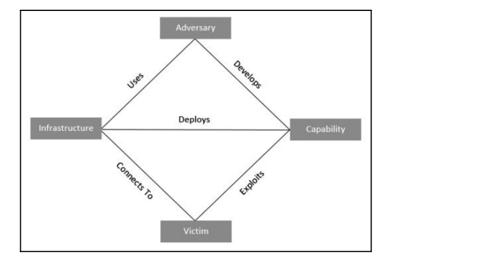
MITRE ATT & CK(Adversarial Tactics ,Techniques,& Common Knowledge)
Threat Intelligence source
- internally developed source
- Commercial source
- Opensource OSINT
- OPENIOC
- STIX
- TAXII
- VERIS
Threat Intelligence platform
- MISP threat share(Malware Information Sharing Platform) MISP
Using threat Intelligence
- Proactive threat Intelligence Use MISP to export multiple rules to apply to Bro,Openioc,Suricata…
- Reactive threat intelligence
- AutoPsy use rules of MISP
- Add IOC to Redline
- Yara and Loki
Recovery Process
Live Recovery
- Linux Live CD be used to reset or change a windows pc password sudo chntpw sam sudo chntpw -u SAM
Cyber-resilient recommendations
- Standardize
- Identical Domain controller,os,configuration,hardware,software
- Modernize
- Technology evolves quickly
- Develop a comprehensive patching strategy
- Develop a comprehensive backup strategy
- Enforce credential hygiene
Vulnerability Management
The vulnerability management life cycle is designed to counter the efforts made by the attackers in the quickest and most effective way
Creating a vulnerability management strategy
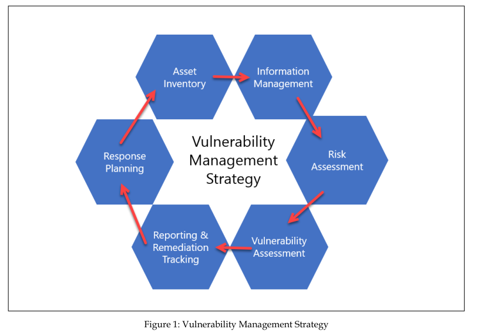 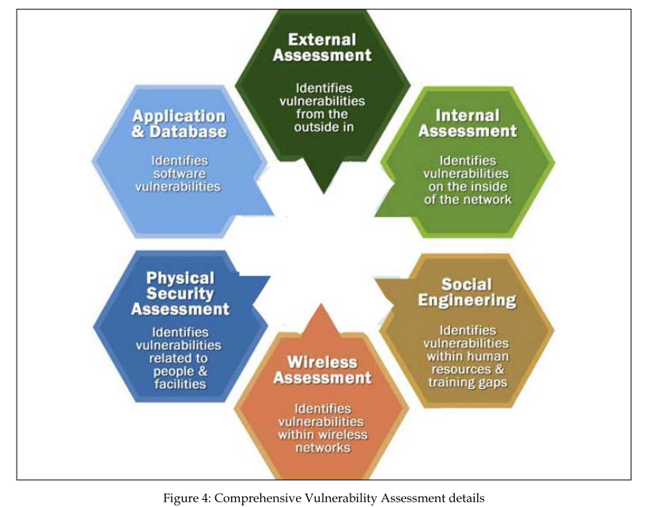
Vulnerability Management Tools
- Intruder
- Patch Management Plus
- Insight VM
- Azure Threat & Vulnerability Management
Static analysis
Method
- Fingerprinting
- Anti-virus scanning
- String extraction
- File format(Metadata)
- Packer analysis
- Disassembly
Tools
- ClamAV
- Pestudio
- REMnux
- YARA
Dynamic analysis
Method
- Defined point analysis(compare difference of process,file,behavior)
- Runtime behavior analysis Loki Genyararule
Tools
- Malware sandbox Flare
- Process Explorer
- Process Spawn Control
- Cuckoo_Sandbox
- Malware_analysis_web_version
Hunting for threats
The threat hunting maturity model
- HMO–Initial: During the initial stage, organizations rely exclusively on automated tools such as network- or host-based intrusion prevention/detection systems, antivirus, or security information and event management(SIEM)to provide alerts to the threat hunt team. These alerts are then manually investigated and remediated. Along with a heavy reliance on alerting, this is limited to no use of threat intelligence indicators. Finally this maturity level is characterized by a limited ability to collect telemetry from systems Organizations at this stage are not able to threat-hunt
- HM1-Minimal:At the minimal stage,organizations are collecting more data and,in fact,may have access to a good deal of system telemetry available.In addition,these organizations manifest the intent to incorporate threat intelligence into their operations but are behind in terms of the latest data and intelligence on threat actors.Although this group will often still rely on automated alerting,the increased level of system telemetry affords this group the ability to extract threat intelligence indicators from reports and search available data for any matching indicators.This is the first level at which threat hunting can begin. HM2-Procedural:At this stage,the organization is making use of threat hunting procedures that have been developed by other organizations,which are then applied for a specific use case.For example,an organization may find a presentation or use case write-up concerning lateral movement via a Windows system’s internal tools.From here,they would extract the pertinent features of this procedure and apply it to their own dataset.At this stage,the organization is not able to create its own process for threat hunting.The HM2 stage also represents the most common level of threat hunting maturity for organizations that have threat hunting programs.
- HM3-Innovative:At this maturity level,the threat hunters are developing their own processes.There is also increased use of various methods outside manual processes,such as machine learning,statistical,and link analysis.There is a great deal of data that is available at this level as well.
- HM4-Leading: Representing the bleeding edge of threat hunting, the Leading maturity level incorporates a good deal of the features of HM3 with one significant difference, and that is the use of automation. Processes that have produced results in the past are automated providing an opportunity for threat hunters to craft new threat hunting systems that are better adept at keeping pace with emerging threats.
Threat Hunt Cycle
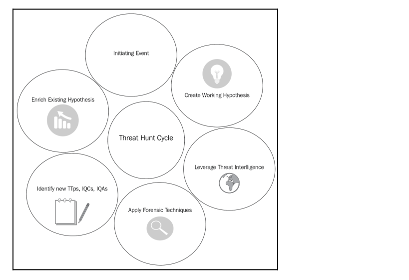
Log Analysis
OS log
Windows Prefetch CrashDumps [Windbg](Analysis CrashDump file) Instant Online Crash Analysis-CrashDump file